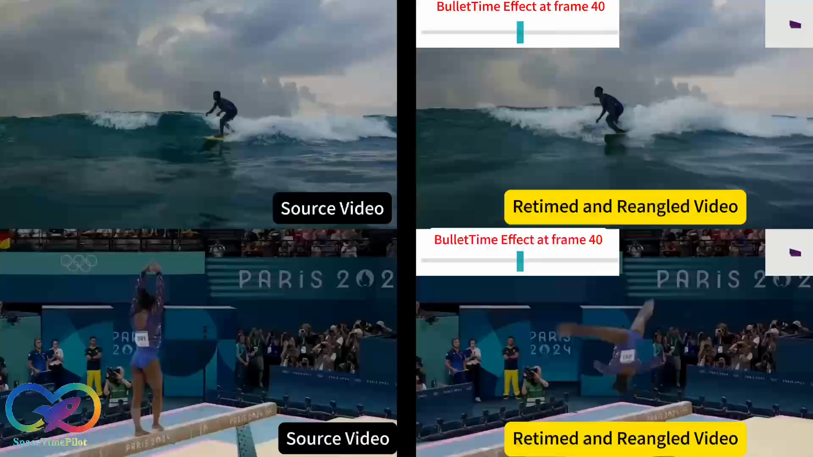

|
Zhening Huang I'm a final-year PhD student in Machine Learning at the University of Cambridge, supervised by Professor Joan Lasenby. My current research mostly focuses on two directions: using coding agents for 3D modeling (LiteReality, LiteReality-Agent, Articraft), and video world models (SpaceTimePilot). During my PhD I spent time at Adobe Research, working with Chun-Hao Huang. I am currently interning at Morpheus AI (Roblox) on video world models, mentored by Xun Huang and Yicong Hong. I am actively looking for full-time positions starting January 2027 in robotics, agentic 3D modeling, and video world models. Whether you are hiring or just want to talk research in these areas, feel free to reach out. |

|
News
|
First / Co-first Author Publications |
|
|
LiteReality-Agent: An Agentic System for Interactable 3D Indoor Scene Reconstruction
Zhening Huang*, Yueyan Li*, Johnathan Chiu, Xiaoyang Lyu, Matt Zhou, Yuxin Yao, Joan Lasenby, Shangzhe Wu * Equal contribution Technical Report Project Page / Viewer / Scanner App / GitHub 📖 Read the Blog
📖 Read the Blog
TLDR: LiteReality-Agent is an open-source, end-to-end toolkit for reconstructing interactable indoor 3D scenes. Scan a room with the iOS LiDAR app, and the agent authors the scene as a Python program — editing code, rendering, and comparing against the capture until quality control passes — producing a graphics-ready scene with articulated assets. |
|
|
Articraft: An Agentic System for Scalable Articulated 3D Asset Generation
Matt Zhou*, Ruining Li*, Xiaoyang Lyu*, Zhaomou Song*, Zhening Huang*, Chuanxia Zheng, Christian Rupprecht, Andrea Vedaldi, Shangzhe Wu * Equal contribution Technical Report Project Page / Paper / GitHub
TLDR: Articraft reduces articulated 3D asset generation to writing a program that builds the asset, and uses an LLM agent with a domain-specific SDK and validation harness to write those programs automatically. It yields Articraft-10K, a curated dataset of over 10K articulated assets across 245 categories, useful for training articulation models and for robotics simulation and VR. |
|
 |
SpaceTimePilot: Generative Rendering of Dynamic Scenes Across Space and Time
Zhening Huang, Hyeonho Jeong, Xuelin Chen, Yulia Gryaditskaya, Tuanfeng Y. Wang, Joan Lasenby, Chun-Hao Huang
CVPR 2026 
TLDR: SpaceTimePilot disentangles space and time in a video diffusion model for controllable generative rendering. Given a single input video of a dynamic scene, it steers both the camera viewpoint and the temporal motion within the scene, enabling free exploration across the 4D space–time domain. |

|
LiteReality: Graphics-Ready 3D Scene Reconstruction from RGB-D Scans
Zhening Huang, Xiaoyang Wu, Fangcheng Zhong, Hengshuang Zhao, Matthias Nießner, Joan Lasenby NeurIPS 2025 Workshop Spotlight at the 2nd Workshop on 3D-LLM/VLA, CVPR 2026 Project Page / Paper / Video / GitHub
TLDR: LiteReality is an automatic pipeline that converts RGB-D scans of indoor environments into graphics-ready scenes with high-quality meshes, PBR materials, and articulated objects ready for rendering and physics-based interactions. |
|
|
OpenIns3D: Snap and Lookup for 3D Open-vocabulary Instance Segmentation
Zhening Huang, Xiaoyang Wu, Xi Chen, Hengshuang Zhao, Lei Zhu, Joan Lasenby ECCV 2024 Best Paper Award at the BMVA Symposium on Multimodal Learning 2024 Project Page / Paper / Video / GitHub
TLDR: OpenIns3D proposes a "mask-snap-lookup" scheme to achieve 2D-input-free 3D open-world scene understanding, which attains SOTA performance across datasets, even with fewer input prerequisites. |
ServicesReviewer for CVPR, ICCV, ECCV, NeurIPS, ICML, ICLR, SIGGRAPH, SIGGRAPH Asia, Eurographics, and 3DV. |
|
Design and source code from Jon Barron's website |